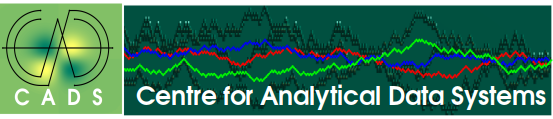

|  |
|
|
|
The Centre for Analytical Data Systems (CADS) is a technology transfer and consulting
service unit located in Comayaguela. It is an interdisciplinary technology transfer center that uses computational resources to provide data-driven analytical solutions to the industrial sectors. Our goal is to support the industrial development of our region, with the application of cutting edge high performance numerical optimization and simulation techniques.
CADS provides not just computing resources but also technical consulting services
The Center is located in the 901 of the 4th Street and 9th Avenue, Comayaguela. |